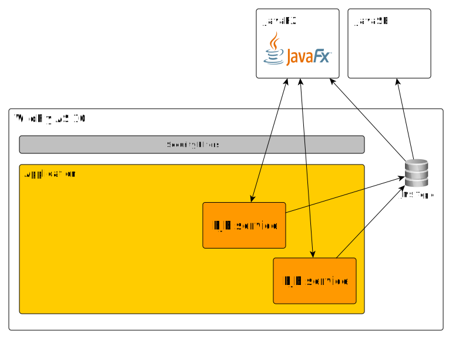
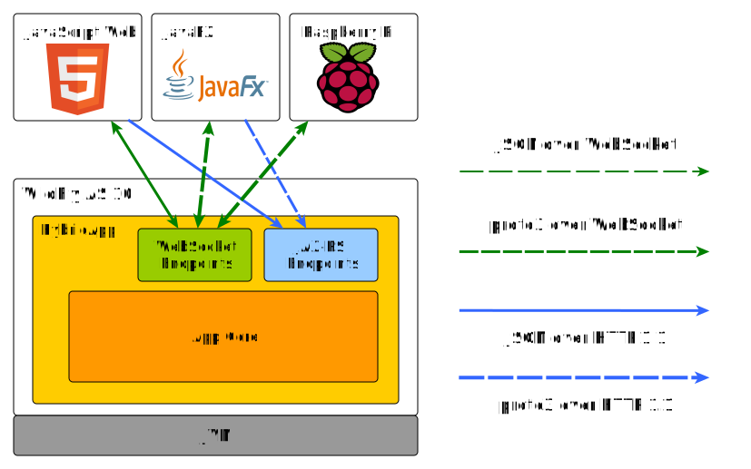
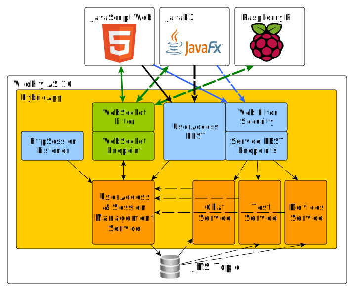

JEE7 Real-Time
(web) applications
Juraj VeverkaJava and JEE developer with 10+ Years experienceParticipated on many international projects Participating on solution architecture designs Solutions based on WildFly / Jetty ... Raspberry PI and IoT enthusiast |
About this presentation
- Not so traditional development approach
- JEE technologies for near real-time experience
- Servlet 3.1 and JAX-RS capabilities
- WebSockets - of course !
- Beyond JEE - tips for improvements
- Future of JEE platform - what's expected in JEE8/9
- DEMO: HybridApplication
- Not Included: hard real-time
JEE apps are usually ...
- Transactional - one transaction per request
- Thread model - one thread per request
- Request/Response - request->processing->response
- DB centric - Hibernate/JPA with SQL database
- Web Interface - server side rendering (JSF)
- Monolithical - single war or few war/ears
JEE apps might be also ...
- Reactive - event driven client-server communication
- Near Real-Time - low latency responses
- Effective - better http stack utilization
- Multi-Language - support different client technologies
- Full-duplex - communication with server during user's session.
JEE - Java clients
- Backend - WildFly 10 as JEE7 server
- JEE technologies for JavaSE/JavaFX clients
- CDI events
- JMS - client server messaging
- Remote EJB calls
- ACC - Application Client Container
Java SE Clients
Java SE Clients
- Does not integrate well in multi-language environment
- Practically limited to Java SE clients
- Not suitable for modern deployments
- Remote EJB call example - ejb-01-lab
- Remote EJB call example with roles - ejb-03-lab
- Remote JMS Topic and Queue access - mdb-01-demo
JEE7 technologies

JEE - HTTP clients
- Backend - wildFly 10 as JEE7 server
- JEE technologies for HTTP/HTML5 clients
- JAX-RS - REST APIs
- HTTP protocol upgrade
- WebSockets
- JSF - Java Server Faces *
- Integrates very well in multi-language environment
- Suitable for Web Browser clients
- Suitable M2M integrations
JEE - HTTP RT clients
- Servlet 3.1 - Asynchronous processing, JSR340
- Servlet 3.1 - Protocol upgrade, JSR340
- JAX-RS 2.0 - REST APIs, JSR339
- WebSockets 1.0 - JSR356
- JSF 2.2 - Java Server Faces, JSR344, kind of suitable ...
JSF ... is a problem
- JSF is excellent for server-side rendering
- Problematic for real-time applications
- Can be adapted for real-time user experience
- Use combination of JSF views and websockets
JSF ... is a problem
HTTP protocol upgrade
- Servlet 3.1 - Protocol upgrade
- Full duplex communication using own protocol
- Handshake - protocol negotiation
- Full duplex TCP connection
- Close from client or server
- Demo on Github: servlet-04_protocol-upgrade
- WebSocket is based on HTTP protocol upgrade
HTTP protocol upgrade
1. Implement your HttpUpgradeHandler
public class CustomProtocoloUpgradeHandler implements HttpUpgradeHandler {
@Override
public void init(WebConnection wc) {
//handle read/write messages
}
@Override
public void destroy() {
}
}
HTTP protocol upgrade
2. Use your HttpUpgradeHandler in servlet
@WebServlet(urlPatterns = { "/customProtocolEndpoint" })
public class ProtocolUpgradeServlet extends HttpServlet {
@Override
public void doGet(HttpServletRequest request,
HttpServletResponse response) {
String protocolName = request.getHeader("Upgrade");
if (MessageUtils.PROTOCOL_NAME.equals(protocolName)) {
response.setStatus(101);
response.setHeader("Upgrade", MessageUtils.PROTOCOL_NAME);
response.setHeader("Connection", "Upgrade");
request.upgrade(CustomProtocoloUpgradeHandler.class);
}
}
}
HTTP protocol upgrade - advandages
- Usually only one open port
- Servlet container handles all inbound traffic
- Not limited to HTTP anymore
- Easy to intercept with Servlet filters
- Easier security setup
Is HTTP a problem !?
- HTTP is good for client-initiated requests
- HTTP is half-duplex
- HTTP is verbose, complex, resource-wasteful
- Common hacks for ServerPush
- Polling
- Long Polling
- Comet / Ajax
- SSE - Server Sent Events
HTTP optimization
- Google Protocol Buffers
- To speed up HTTP communication
- Better/Faster for serialization of structured data
- Supported languges - C++, C#, GO, Java, Python, Ruby, ...
- Instead sending JSON/XML as payload, send smaller packets.
- Optimizes HTTP payload
- Defines protocol contract
JAX-RS with protocol buffers
JAX-RS with protocol buffers
- Demo Github: servlet-07_proto-buffers
- Endpoints
http://.../data/getAllUsershttp://.../data/getUserByName?userName=john- Supports 'application/protobuf' media type
JAX-RS with protocol buffers
1. Write your protocol in proto3
syntax = "proto3";
package users;
option java_package = "itx.protobuffers.common";
option java_outer_classname = "UsersProtoc";
message User {
string userName = 1;
string email = 2;
string note = 3;
}
message UserList {
repeated User user = 1;
}
JAX-RS with protocol buffers
2. Create JAX-RS Provider for reading and writing
@Provider
@Produces("application/protobuf")
@Consumes("application/protobuf")
public class ProtoBufferProvider implements MessageBodyReader, MessageBodyWriter {
@Override
public void writeTo(Object t, Class type, Type genericType, Annotation[] annotations, MediaType mediaType,
MultivaluedMap httpHeaders, OutputStream entityStream) throws IOException, WebApplicationException {
...
}
@Override
public Object readFrom(Class type, Type genericType, Annotation[] annotations, MediaType mediaType,
MultivaluedMap httpHeaders, InputStream entityStream) throws IOException, WebApplicationException {
...
}
}
JAX-RS with protocol buffers
3. Create JAX-RS endpoint
@Path("data")
public class ProtoBufferService {
@GET
@Produces("application/protobuf")
@Path("getAllUsers")
public Response getAllUsers() {
return Response.ok(dataService.getAllUsers()).build();
}
@GET
@Produces("application/protobuf")
@Path("getUserByName")
public Response getUserByName(@QueryParam("userName") String userName) {
User user = dataService.getUserByName(userName);
return Response.serverError().build();
}
}
JAX-RS with protocol buffers
4. Create JAX-RS client
public static void main(String[] args) {
Client client = ClientBuilder.newBuilder()
.register(ProtoBufferProvider.class)
.build();
WebTarget target = client.target(config.getServiceURLUserList());
Builder builder = target.request();
UserList userList = builder.get(UserList.class);
}
WebSockets
- TCP based, bi-directional, full-duplex messaging
- Dramatic reduction in network latency and traffic.
- WebSocket frame is just 2 bytes overhead.
- Good adoption by majority of web browsers.
- Mature JavaScript API.
- Supports HTTP proxies, filtering, authentication.
- Suitable also for native client integration
WebSockets
- WebSocket API - W3C
- WebSocket MDN - API and method overview.
- IETF - RFC-6455
- JSR 356 - Java API for WebSocket
- HTTP protocol upgrade is used
WebSocket protocol
WebSockets with proto buffers
- Easy to use proto messages instead JSOM or XML
- Reuse existing REST API proto messages
- Use binary transport
- Use @PathParam to process different message types
- Use Wrapper message in case of single WS endpoint
WebSockets with proto buffers
Proto wrapper message
message WrapperMessage {
oneof msg {
LoginRequest loginRequest = 1;
LoginResponse loginResponse = 2;
TestRequest testRequest = 3;
TestResponse testResponse = 4;
...
}
}
WebSockets with proto buffers
Server or Client end-point
@ServerEndpoint("/ws/wsendpoint")
public class WSEndpoint {
@OnMessage
public void onMessage(String message, Session session) {
//JSON or XML handling
}
@OnMessage
public void onMessage(byte[] message, Session session) {
WrapperMessage wm = WrapperMessage.parseFrom(message);
int messageTypeId = wm.getMsgCase().getNumber();
switch (messageTypeId) {
//message handling by type
}
}
}
WebSockets with proto buffers
Sending proto messages
public void sendMessage(Session session, Message message,
boolean useBinary) throws IOException {
if (useBinary) {
message.writeTo(new ByteArrayOutputStream());
ByteBuffer bb = ByteBuffer.wrap(entityOutputStream.toByteArray());
session.getAsyncRemote().sendBinary(bb);
} else {
String jsonMessage = JsonFormat.printer()
.includingDefaultValueFields()
.print(message);
session.getAsyncRemote().sendText(jsonMessage);
}
}
Communication patterns
- Simple set of data values
- Display set of immutable data values
- Sensor data, statisctics, ...
- Data series
- Time series data
- Time charts, ...
- Client query results
- Results from database based on user query
- Combination of above
Communication protocols
- Clients using REST APIs
- Clients using REST APIs and WebSocket connections
- Clients using only WebSocket connections
- Web Browser clients - JSON
- Other clients - JSON / XML / Proto messages
Session synchronizations
- For clients using HTTP session and WebSockets
- HttpsSession is usually bound to user identity
- WebSocket session is not bount to HttpSession
- Keep both session types in sync
- Disconnect WebSockets on HttpSession timeout !
- Unattended WebSockets may lead to security leaks
- Verify client identity on Websocket connect
Beyond JEE7: JCache
- WildFly subsystem - infinispan
- In-Memory data store
- Used by wildfly internally
- clustering
- web container
- ejb container
- hibernate subsystem
- Local or distributed cache (clustering/HA)
- Data eviction strategies: NONE, LRU, LIRS
- Data expiration strategies: time criteria
- Github demo: jcache-01-lab
Beyond JEE7: JCache
Define custom application cachestandalone-full.xml
<subsystem xmlns="urn:jboss:domain:infinispan:4.0">
...
<cache-container name="jcacheTest" default-cache="jcacheTestdb">
<local-cache name="jcacheTestdb">
<transaction mode="NON_XA"/>
<local-cache>
</cache-container>
...
</subsystem>
Beyond JEE7: JCache
Use it in your beans.
@Stateless
public class CacheAccessBean {
@Resource(lookup="java:jboss/infinispan/container/jcacheTest")
private CacheContainer container;
private Cache<String, String> cache;
@PostConstruct
private void init() {
cache = container.getCache();
}
public String getData(String key) {
return cache.get(key);
}
}
Beyond JEE7: SWAGGER.io
- swagger.io - OpenAPI Specification
- Define a standard, language-agnostic interface to REST APIs
- Like WSDL but easier and better !
- Machine readable API
- Easier integrations in microservice way
- Easy to use with WildFly JAX-RS
- Github demo: servlet-09_jaxrs-swagger
Beyond JEE7: HTTP 2.0
- Important step towards faster REST/HTTP integration
Future improvements in JEE8
- JEE8 standard - Q3/2017
- Servlet 4.0, HTTP/2
- HTTP/2 - eficient and fast HTTP
- Server Sent Events - MediaType.SERVER_SENT_EVENT JAX-RS 2.1
- Asynch CDI events ?
- ALPN - Application Layer Protocol Negotioation
- ActiveMQ-MQTT bridge ?
- AMQP Link
JEE8 - Roadmap
- As presented at JavaOne
- 2017 - Finalize JEE8 specs
- 2018 - Finalize JEE9 specs
- JEE8 & JEE9 - focus on cloud and micro-services.
Emerging technologies
Not part of JEE, maybe later ...- http://socket.io ??
- coherenceRx ??
- gRPC + HTTP 2 - nex gen REST APIs, based on Protobufs
- Gluon - JavaFx for on Android and iOS
Demo: Hybrid Application
Demo: Hybrid Application
- Clients
- JavaScript - Bootstrap client
- JavaFx - JVM fat client, UI
- RPi - JVM WebSocket client
- Backend
- JEE7 - single war deployed in WildFly 10 AS
Demo: Hybrid Application
Communication protocols:- Web Browsers - JSON over HTTP 1.1
- JSON over HTTP 1.1
- JSON over webSocket
- JVM clients
- proto3 over HTTP 1.1
- proto3 over WebSocket
- may use JSON as well
- proto3 - ready for C#, Python, Ruby ... clients !
Demo: Hybrid Application
Demo: Hybrid Application
Features:- Admin - management of user sessions
- Devices - control connected devices, sensor readings
- Chat - in real time of course :)
- Test - websocket performance tests
Demo: Hybrid Application
Performance testing using echo messages:- compare json/protocol buffer perfomance
- test different echo message sizes
- test test performance with complex messages
- calculate messges/s and RTT
- test against javascript/JavaFx/JavaSE clients
- test against Explorer, Edge, Chrome, Firefox
- test against x86_64 / ARMv6 / ARMv7 clients
- run tests in parallel
Demo: Hybrid Application
Echo message proto3
message EchoData {
int32 jobId = 1;
int32 ordinal = 2;
string payload = 3;
repeated EchoStructuredPayload structuredPayload = 4;
}
message EchoStructuredPayload {
int64 timestamp = 1;
string message = 2;
double value = 3;
bool active = 4;
}
Demo: Hybrid Application
Simple Echo message example in JSON
{
jobId: 1,
odinal: 32,
payload: "xxx",
structuredPayload: null
}
Demo: Hybrid Application
Structured Echo message example in JSON
{
jobId: 1,
odinal: 32,
payload: "hello java",
structuredPayload: [
{
timestamp: 1453546512, message: "messsage: 0",
value: 125.215, active: true
},
{
timestamp: 1453546515, message: "messsage: 1",
value: 125.218, active: false
},
...
]
}
Demo: Hybrid Application
Raspberry PI stack:Demo: Hybrid Application
Raspberry PI schematics:
Demo: Hybrid Application
Raspberry PI hardware:
Demo: Hybrid Application
Raspberry PI resources:- PI ZERO, 1 MODEL A+, 2 MODEL B, 3 MODEL B
- HTU21D - temperature and relative humidity sensor
- BMP180 - bosch pressure and temperature sensor
- pi4j project
- itx-rpi-drivers - pi4j drivers
- rpi client - websocket client
JEE7 Real-Time apps - wrap up
Backup Slides
Backup #01
References
- github/jveverka/jee-examples - this presentation with all examples
- The Reactive Manifesto - principles of reactive systems
- Google Protocol Buffers - efficient message transport
- Reveal JS - made this presentation possible, thanx!
- yEd - diagram and graph editor